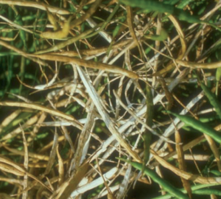

Болезни рапса
Ложная мучнистая роса озимого рапса(Perenospora brassicae)

Описание:
Возбудителем является гриб Peronospora brassicae Gaeum, который сохраняется на пораженных растительных остатках в виде зооспор — они и становятся первичным источником заражения растений рапса весной.
Признаки заболевания/Повреждения:
На семядолях и первых настоящих листьях появляются буро-зелёные, жёлтые, расплывчатые пятна, на нижней стороне которых образуется налёт сначала белого цвета, далее становится серо-фиолетовым. Со временем заболевание распространяется на новые листья взрослых растений. В дальнейшем пятна сливаются, возникают обширные поражённые участки, листья преждевременно желтеют и засыхают. На стеблях и стручках также образуются округлые или вытянутые по форме, светло-бурые, слегка вдавленные пятна. На яровом рапсе заболевание чаще проявляется в начале фазы бутонизации. При сильном поражении растений семена не образуются, а если и образуются, то очень щуплые, недоразвитые. Потери урожая составляют 10–15%.
Меры борьбы:
Соблюдение севооборота, pаделка растительных остатков. Химическая обработка: Осенью при обнаружении первых симптомов проводят обработку фунгицидом. Весной при высокой влажности(выше 70%) и умеренной температуре(18-20°С), при выявлении симптомов на более чем 10% растений следует провести обработку одним из фунгицидов разрешённых на рапсе согласно регистра.

Белая гниль озимого рапса(Sclerotinia sclerotiorum)
Описание:
Склеротиниоз поражает все надземные органы озимого и ярового рапса в течение всего периода вегетации. Наиболее часто и характерно симптомы заболевания проявляются во вторую половину вегетации. На стеблях, листьях, черешках листьев, цветоносах и стручках сначала появляются мокнущие зеленоватые пятна, которые покрываются обильным белым ватообразным налетом (отсюда название болезни «белая гниль»). Налет состоит из мицелия гриба. Мицелий развивается также внутри стеблей и стручков. Со временем он уплотняется и на поверхности и внутри пораженных органов формируются сначала бурые, затем черные твердые комочки различной величины и формы - склероции. Склероции – это уплотненный мицелий гриба с обезвоженными клетками. .Гриб сохраняется в виде склероциев в почве и как примесь в семенах, а также на растительных остатках рапса и других поражаемых растений (горчица, сурепица, лен, подсолнечник, морковь, кукурузу и другие).
Признаки заболевания/Повреждения:
Весной склероции прорастают либо мицелием, либо на них формируются плодовые тела – апотеции с сумками и сумкоспорами. Созревание и выброс сумкоспор растянуты 1,5 месяца. Сумкоспоры подхватываются потоками воздуха и вызывают первичное заражение всех надземных органов растений рапса. При прорастании склероциев в мицелий, заражение происходит грибницей и обычно начинается с нижней части стебля, которая находится близко к инфекционному началу.вторичное заражение растений рапса происходит при помощи грибницы, кусочки которой могут переноситься на соседние растения. Заражению подвержены прежде всего ослабленные растения, срастения с повреждениями. Высокая влажность воздуха, наличие капельно-жидкой влаги и умеренная температура – 15…20⁰С, особенно во вторую половину вегетации, способствуют развитию болезни.
Меры борьбы:
Соблюдение севооборота с целью снижения запаса инфекции в почве, очистка семян от примесей склероциев, протравливание семян перед посевом, борьба с сорняками, особенно с крестоцветными, борьба с насекомыми, наносящими повреждения растениям рапса; обеспечение.Химические обработки при обнаружении симптомов фунгицидом разрешённым на рапсе.
Мучнистая роса(Erysiphecruciferum)
Описание:
Развитию болезни способствует сухая тёплая (+18... +22 градуса) солнечная погода, а также щелочная реакция почвы.
Признаки заболевания/Повреждения:
Заболевание проявляется на листьях (преимущественно с верхней стороны), черешках, стеблях в виде белого мучнистого налёта. Со временем он утолщается, покрывается тёмно-коричневыми крапинками, что придаёт ему грязно-белый или коричневый цвет. Сильно поражённые листья желтеют, становятся хрупкими и отмирают. Болезнь приводит к снижению фотосинтетической поверхности листьев, преждевременному усыханию всего растения, что ведёт к потерям урожайности семян рапса.
Меры борьбы:
Вспашка с оборотом пласта и борьба с сорными растениями, соблюдение севооборота. Химические обработки при обнаружении симптомов фунгицидом разрешённым на рапсе.
Фомозная сухая гниль озимого рапса(Phoma lingam)
Описание:
Возбудитель имеет пикнидиальную (Phoma lingm (Tode) Desm.) и сумчатую (Leptosphaeria maculans Ceset (Desm) pes et De Not) стадии. Источник инфекции: растительные остатки и семена. Развитию болезни благоприятствуют высокая влажность воздуха (60-80%) и температура 20-24 градусов, инкубационный период болезни длится 5-8 дней.
Признаки заболевания/Повреждения:
Проявляется в течение всего периода вегетации. На всходах в нижней части стебля появляются тёмные пятна, впоследствии приобретающие серый цвет. Вскоре пятна покрываются чёрными точками — пикнидами гриба. Стебли становятся трухлявыми, высыхают, что приводит к гибели растений. При более позднем заражении растения выживают, но рост их сильно угнетён, они становятся хлоротичными. На листьях и стручках пятна сухие, серые, с массой пикнид на поверхности. Семена в таких стручках щуплые, тусклые, инфицированные.
Меры борьбы:
Протравливание семян. Глубокая заделка растительных остатков. Соблюдение севооборота. Использование устойчивых гибридов. При первых симптомах болезни следует провести обработку разрешённым на культуре фунгицидом.


Альтернариоз озимого рапса(Alternaria brassicae)
Описание:
Вредоносное заболевание рапса. Приводит к снижению урожайности, и к сильным потерям качества.Зимует мицелий на растительных остатках, семенах и в почве.
Признаки заболевания/Повреждения:
В период развития и созревания семян на стеблях, стручках образуются продолговатые бурые пятна. Далее поражаются семена, которые становятся тусклыми, щуплыми, недоразвитыми, теряют всхожесть. На листьях пятна округлые или угловатые. Пораженные листья скручиваются, засыхают, стручки растрескиваются – две створки и серединная пластинка образуют характерный «трезубец» – симптом альтернариоза. Во влажную погоду пораженные части растений покрываются темным бархатистым налетом спороношения гриба. Болезнь снижает сбор семян до 25%, значительно ухудшая их качество.
Меры борьбы:
Соблюдение севооборота, pаделка растительных остатков. Химическая обработка: Осенью при обнаружении первых симптомов проводят обработку фунгицидом. Весной при высокой влажности(выше 70%) и умеренной температуре(18-20°С), при выявлении симптомов на более чем 10% растений следует провести обработку одним из фунгицидов разрешённых на рапсе согласно регистра.